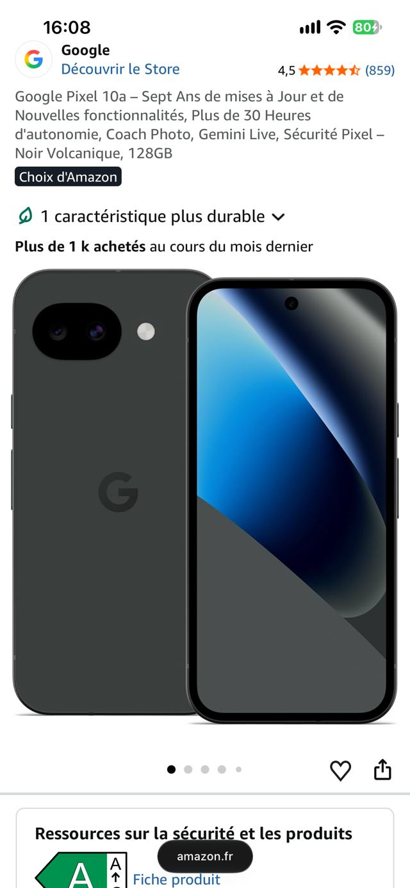
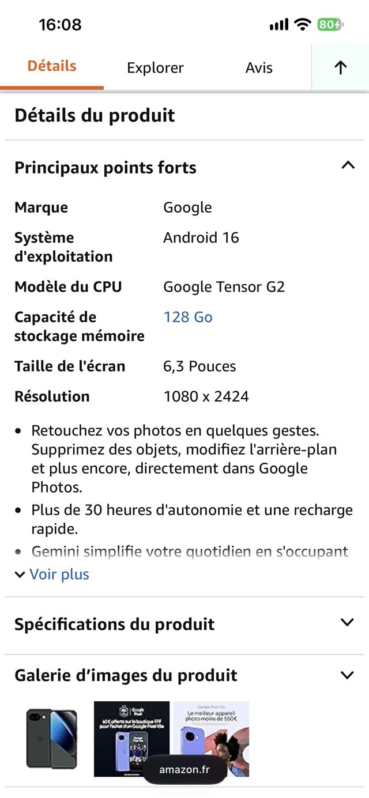
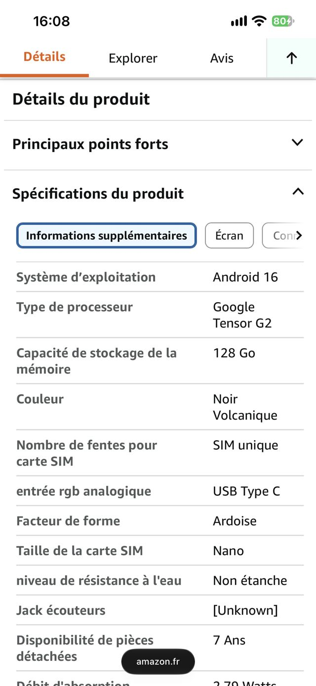

Commencez par l’usage
Vous étudiez, vous travaillez, vous jouez ou vous photographiez. Cette première réponse détermine les caractéristiques qui méritent votre attention. Elle évite surtout de comparer dix chiffres dont vous ne ferez rien.
Recherchez une caractéristique, un usage ou un modèle.
Un téléphone peut afficher 200 Mpx, 12 Go de RAM, 5 000 mAh et 120 Hz sans que vous sachiez encore s’il vous conviendra. Le but de ce guide est de faire l’inverse de la publicité : partir de votre usage, retrouver les lignes utiles dans la fiche produit, puis traduire les chiffres en conséquences concrètes.
Vous étudiez, vous travaillez, vous jouez ou vous photographiez. Cette première réponse détermine les caractéristiques qui méritent votre attention. Elle évite surtout de comparer dix chiffres dont vous ne ferez rien.
Sur un site marchand ou chez un vendeur en ligne, sélectionnez le modèle qui vous intéresse puis faites défiler la page. Cherchez une zone appelée Caractéristiques, Caractéristiques techniques, Détails ou Description. C’est ici que le guide devient utile.
Ne lisez pas la fiche de haut en bas. Cherchez l’écran, la batterie, le stockage, la puce, la photo, la connectivité, la protection et les mises à jour. Vous n’avez pas besoin de tout connaître pour commencer.
Un chiffre n’est pas une qualité en lui même. 5 000 mAh signifie une capacité de batterie. Il reste à savoir combien de temps le téléphone tient réellement. 120 Hz signifie une fréquence d’affichage élevée. Il reste à voir comment l’écran la gère et si cela vous sert.
La fiche produit vous donne les mots. Le guide vous apprend à comprendre lesquels comptent pour vous et à ne pas confondre une promesse commerciale avec une information utile.
Les captures d’écran réelles seront placées ici. Elles serviront de carte de lecture : on repère une ligne dans la fiche, puis on revient dans le guide pour comprendre sa portée.

Sur Amazon comme sur Cdiscount, la liste affiche déjà le prix, la note et parfois une couleur/capacité. Cliquez sur le modèle qui vous intéresse pour ouvrir sa fiche.

Sur la fiche, faites défiler au-delà des photos et du titre. Cherchez le bloc « Principaux points forts » ou « Détails du produit » : c’est le début de la zone qui vous intéresse.

C’est ici que se trouvent les lignes utiles : système, processeur, stockage, écran, connectique, protection. Repérez le mot, puis revenez dans ce guide pour savoir ce qu’il signifie pour vous.
Les quatre profils restent tous consultables ; ce raccourci ouvre directement le vôtre et replie les autres.
Le téléphone doit surtout être fiable de 8 h à 22 h : cours, messagerie, transport, vidéo, photos et fichiers. Inutile de payer pour des performances dont vous ne vous servirez pas.
256 Go si vous gardez cours, photos et vidéos plusieurs années.
64 Go non extensible : peu de marge si le téléphone doit durer.
Suivi logiciel clairement annoncé : moins de risque de changer de téléphone trop tôt.
Autonomie annoncée uniquement en mAh : la durée réelle reste inconnue.
Écran lisible dehors et charge suffisamment rapide pour une journée chargée.
Fiche muette sur la luminosité ou la recharge : information à vérifier avant achat.
Ce n’est pas une marque à acheter : c’est votre cahier des charges minimum. Si le modèle dépasse ces lignes sans faire exploser le prix, comparez ensuite la photo et le confort.
« Est-ce que je peux passer une journée normale sans penser au téléphone ? »
Déplacements, appels, navigation, documents, photos de chantier ou partage de fichiers : le téléphone doit rester lisible, rapide et prévisible lorsque vous n’avez pas de prise électrique sous la main.
Bonne luminosité mesurée : les documents restent lisibles dehors.
Pic de luminosité seul : impossible de conclure sur le confort réel.
Charge rapide documentée : une courte pause peut réellement dépanner.
Réparation et pièces inconnues : risque de coût et d’immobilisation.
Si le téléphone reste fluide et lisible sur cette séquence, vous testez quelque chose de plus proche du travail réel qu’un benchmark isolé.
Votre achat doit pouvoir supporter une journée de terrain. Si la fiche ne permet pas de vérifier ces quatre points, ouvrez un test indépendant avant de payer.
Le point critique n’est pas de battre un record pendant deux minutes. C’est de conserver des performances correctes après 20 à 30 minutes de jeu, sans transformer le téléphone en radiateur.
Puce exacte + GPU identifiable : les performances peuvent être comparées.
« Octa-core » sans modèle : information trop vague pour prévoir les performances.
Test prolongé avec températures ou performances après plusieurs dizaines de minutes.
Benchmark instantané seul : il ne montre pas la tenue après chauffe.
Regardez les tests de jeu prolongé : baisse de fréquence, température, FPS moyens et stabilité sont plus parlants qu’un seul score.
Si vous jouez régulièrement, privilégiez la stabilité des performances. Un téléphone qui démarre moins haut mais tient mieux la fréquence peut être plus adapté à vos parties qu’un modèle spectaculaire sur un benchmark court.
Pour la photo et la vidéo, le téléphone doit gérer des scènes très différentes : visage en mouvement, paysage, intérieur sombre, contre jour et vidéo stabilisée. Le nombre de mégapixels n’est qu’une partie du système.
Un capteur de 200 Mpx peut produire une image moins convaincante qu’un capteur plus modeste. La qualité finale dépend de la lumière captée, de l’objectif, du traitement logiciel et de la scène.
Pour choisir, regardez des exemples pris dans des conditions difficiles. Une photo de nuit, un visage en mouvement et un contre jour vous apprennent souvent plus qu’un tableau de caractéristiques.
« Est ce que ce téléphone me permet de réussir mes photos habituelles ? » vient avant « combien de mégapixels ? ».
Ne relisez pas toute la fiche. Vérifiez seulement les lignes capables de faire changer votre décision.
Technologie, fréquence et luminosité : avez-vous une mesure ou seulement un chiffre marketing ?
Capacité + autonomie testée + vitesse de recharge. Ne confondez pas mAh et durée.
Puce exacte, puis test prolongé si vous jouez ou utilisez des applications lourdes.
Capteur, objectif, OIS et exemples réels. Les Mpx ne suffisent pas à prédire le résultat.
Mises à jour, réparation, batterie et stockage. Ce sont des coûts futurs, pas des détails.
Un chiffre devient intéressant lorsqu’on sait ce qu’il permet réellement de faire, ce qu’il ne garantit pas et quelle autre donnée il faut regarder à côté.
Ce que cela mesure : la définition maximale de l’image, pas sa qualité globale.
200 Mpx représentent environ 4 fois plus de pixels qu’une image de 50 Mpx. Cela peut servir à recadrer davantage ou à conserver beaucoup de détail en pleine lumière. Mais si le capteur, l’objectif ou le traitement limitent le résultat, les pixels supplémentaires n’inventent pas du détail qui n’a pas été capté.
Le nombre de Mpx devient utile pour le recadrage, certains traitements et les grands tirages. Le bon réflexe est de le croiser avec la taille du capteur, l’objectif, la stabilisation et les photos réelles. C’est précisément l’idée de la vidéo de référence : le nombre de pixels n’est pas le meilleur raccourci pour juger une caméra.
Ce que cela mesure : une capacité électrique. Pas un nombre d’heures garanti.
À capacité égale, un écran plus lumineux, une mauvaise réception réseau ou une puce plus énergivore peut consommer davantage. À l’inverse, un téléphone mieux optimisé peut tenir plus longtemps avec une capacité proche.
Regardez l’autonomie mesurée dans un protocole identifiable, puis le temps de recharge. Pour un téléphone de travail, « combien de temps pour récupérer 50 % ? » peut être plus utile que « combien de mAh ? ».
Ce que cela mesure : la mémoire vive disponible pour le système et les applications.
La RAM aide surtout à conserver davantage de tâches en mémoire. Pour un usage courant, passer d’une quantité déjà suffisante à une quantité beaucoup plus élevée ne transforme pas automatiquement la vitesse d’ouverture des applications.
Regardez d’abord la puce, la gestion mémoire du système et le stockage. Pour un gamer, un appareil photo/vidéo ou du multitâche lourd, davantage de RAM peut avoir un intérêt ; pour de la messagerie et du web, la priorité peut être ailleurs.
Étudier, travailler, jouer ou créer. Je sais pourquoi je choisis ce téléphone.
J’ai trouvé la zone Caractéristiques ou Détails et je regarde les lignes utiles.
Je sais ce que mesure chaque chiffre et ce qu’il ne permet pas de conclure.
Je regarde les mises à jour, la réparation et le stockage disponible.
Je compare seulement les caractéristiques qui peuvent réellement changer mon expérience.
Le catalogue sert à mettre en pratique la méthode. Sélectionnez les contraintes qui comptent pour vous, puis regardez comment elles changent la liste des modèles. Le but n’est pas de désigner un téléphone universellement meilleur. Il est de voir lequel correspond à votre cahier des charges.
Choisissez un budget, un critère principal et une marque pour afficher les modèles pertinents.
OLED, Hz, RAM, stockage, mAh, OIS, 5G, IP68 : le lexique part de situations concrètes et descend ensuite vers la technique.